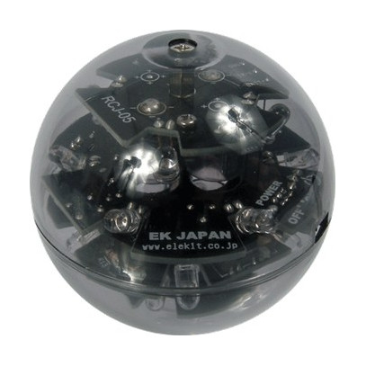
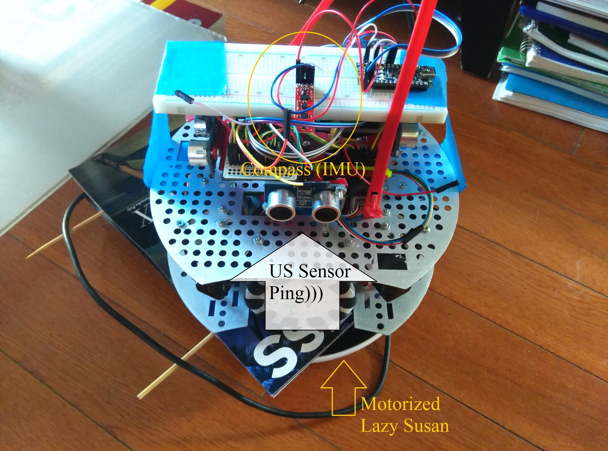
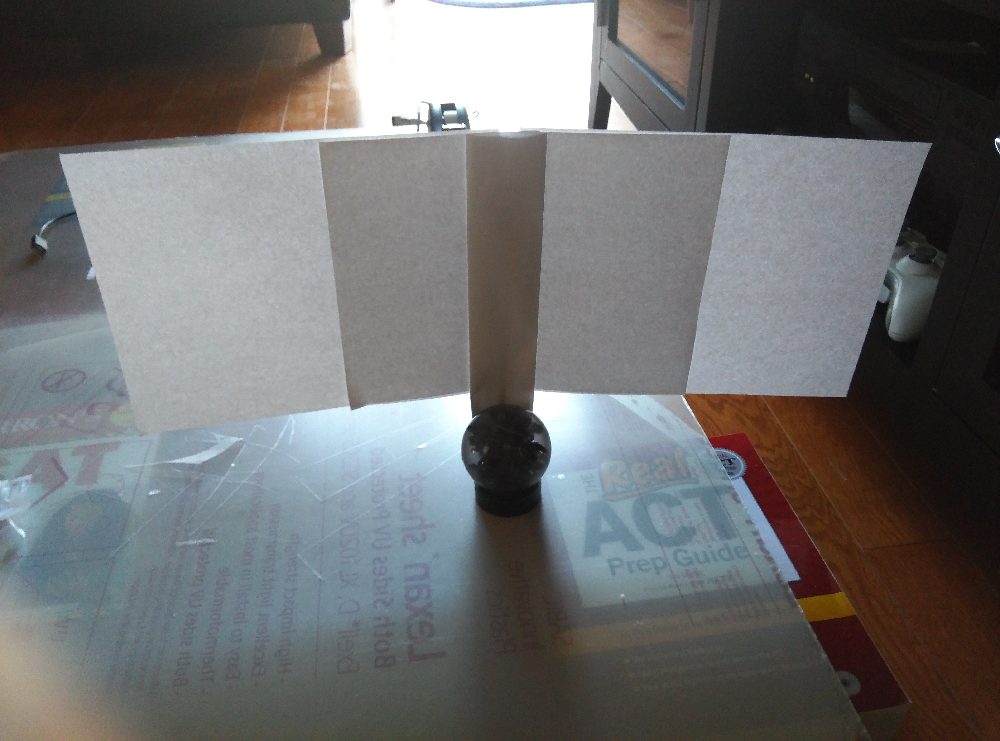
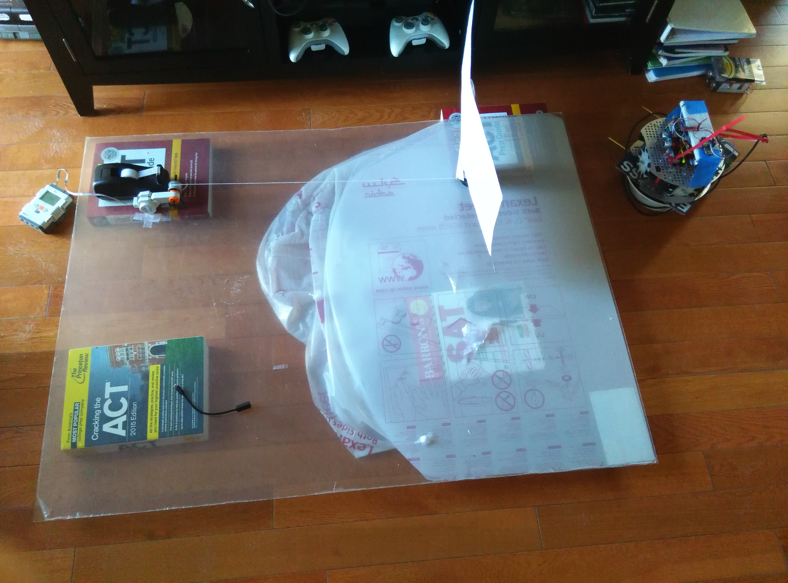
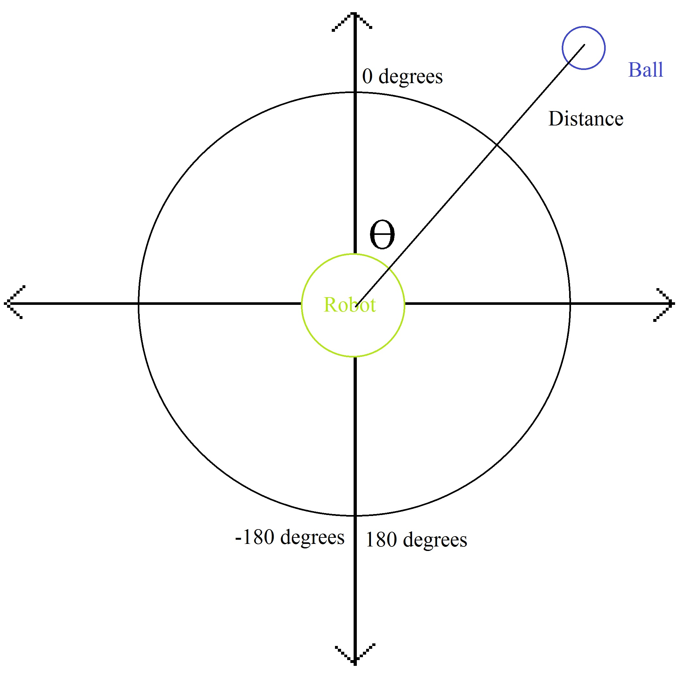
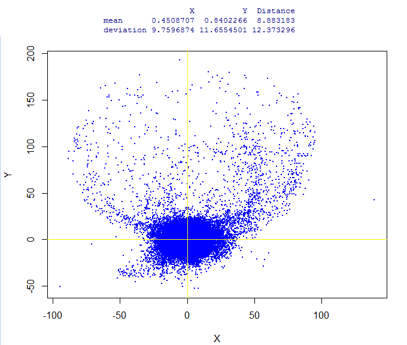

Neural Networking in Infrared Locating
Luke Dai
-
State
-
Project Description
-
Goal
-
Plan
-
Data Collection
-
The Neural Network
-
Do
-
Training
-
Result
-
New Method
-
New Result
-
Conclude
-
Future
-
About Me
Project Description
I am the captain and software writer of a Robotic Soccer
team, Team Dimensions, that competes in Robo
Cup Junior. I have gone to the International level and even won 3rd Place World
Wide. I am always seeking ways to perfect the robots. I am trying to find a
robust way of locating the soccer ball because the infrared sensors cannot give
me a definite position. I am going to try to use 4 sensors with 5 mini IR receivers to locate an
infrared signal with respect to the center of the robot. These sensors
measure the intensity of IR.
Goal
To
create a neural network that can accurately and efficiently predict where the
signal is. To prove that there is a mathematical formula which can output the
location when given the 20 IR receiver data. In this project, I use a ball
(shown left) that emits infrared light and I use the raw value of the 5 sensors
on each of the 4
HiTechnic IR Seeker V2 to detect the ball.
Data Collection
I need to have a method to sample all the IR values of
the reading, the distance from the ball, and the angle of the ball with respect
to the y-axis increasing clockwise. I devised a method with the use of a slow
moving motor to pull the ball and
rotating lazy susan to spin the robot.
 The compass of the robot reads the angle of the ball with
respect to the y-axis of the robot. The
lazy susan will spin the robot at around 3 rotations per minute while the
compass reads the angle with respect to the starting direction. Overall, the data is printed onto a serial monitor which is
recorded onto an android.
The compass of the robot reads the angle of the ball with
respect to the y-axis of the robot. The
lazy susan will spin the robot at around 3 rotations per minute while the
compass reads the angle with respect to the starting direction. Overall, the data is printed onto a serial monitor which is
recorded onto an android.
The ball is
attached to a string which is pulled by a slow moving motor. The ball has a
sheet of paper so that the robot knows what the distance of the ball is from the
center of the robot. The ultrasonic sensor (Ping)))
sensor) detects the paper's distance by measuring the time it takes for
sound to travel to the paper, bounce off the paper and come back to the sensor.
The Neural Network
Neural Network is a machine learning method of fitting a
function to a set of data with inputs and outputs. It simulates the passing of
information or values like the brain - information is passed through synapses in
the brain and interpreted into another information in the neuron. The process of
information being passed from neuron to neuron is what makes the Neural Network
efficient in training as it also simulates how humans learn. From a past
project, I have concluded a generic architecture of the Neural Network.

Training
I set the 20 IR raw values directly from the mini sensors
in the Hitechnic IR Seekers to be the input. The outputs are
the angle of the
ball with respect to the y-axis of the robot and distance away from the center
of the robot.

Result
The mean distance of the prediction to the actual point
is 9cm, which is about one ball (7 cm) width. The standard deviation is 12cm,
which is another 2 ball width. This result is already good enough to be used than
my previous ball location program, which is made of hard-coded conditional
statements and general approximations. However, the distribution of the distance
is not normal as shown. There must be something that can improve the training
and make the error more normally distributed.

New Method
Since the angle is a periodic function, it might be hard
to fit a non periodic function to it (as it is hard to fit a polynomial equation
to sin(x) and other trigonometric functions). So I tried changing the outputs to
x and y, setting the origin at the robot's center. I know that when I do such
thing, my actual data may receive more error, as my human and sensor error is
propagated from the multiplication (x = r*sin(theta) and y = r*cos(theta)).
New Result
As predicted, the standard deviation and mean of both X
and Y have decreased along with the deviation of the distance (by half!). As I
have not fine tuned the network of the Cartesian method, this method can be
drastically improved. Overall, this method is a better way to approach the IR
values because now, the distribution of the difference in predicted and actual
looks relatively normal and symmetrical unlike the Polar method.
I can now assume that my network can predict about 65%
of my IR readings to about 2 balls width (15cm).

Future
The goal of the project is to find a method to accurately
predict where the ball is given the raw sensor values of the HiTechnic IR
Seekers. I have demonstrated that the Neural Network has worked to a
satisfactory level and can still be improved upon by fine tuning. I discussed
with Harvard Statistics Professor Meng who advised me to use
Factor Analysis to reduce the amount of inputs in my
neural network. In the next phase, I will be testing whether the neural
network improves my performance.
About Me
I am currently a Junior at Montgomery Highschool. I have
been repeatedly representing the nation in Robo Cup Junior and am always finding
ways to improve my soccer playing robots. I really like to use robust methods
like math to explain the world. I always try to incorporate whatever I learn to
everything else that I do. The Neural Network is a project that I have been
working with Professor Tuckerman of New York University and is an idea that I
have been truly eager to apply to my other projects such as RCJ. I am a Gold
League member in USA Computing Olympiad since 2015 and am a USA Physics Olympiad
Semifinalist. The skills and concepts that I learn in Computer Science and
Physics helps me create more ideas to improve all aspects of my life.